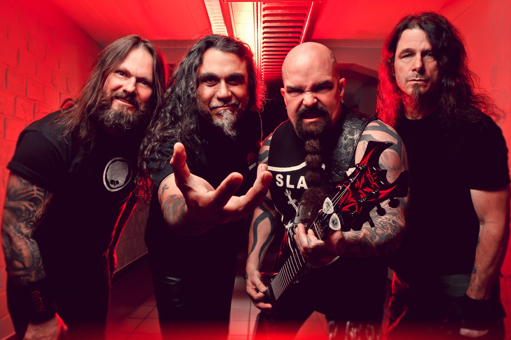

Gli Slayer erano una band thrash metal americana di Huntington Park, in California . La band è stata formata nel 1981 dai chitarristi Kerry King e Jeff Hanneman , dal batterista Dave Lombardo e dal bassista/cantante Tom Araya . Lo stile musicale veloce e aggressivo degli Slayer li ha resi una delle "quattro grandi" band del thrash metal , insieme a Metallica , Megadeth e Anthrax . La formazione finale degli Slayer comprendeva Araya, King, il batterista Paul Bostaph e il chitarrista Gary Holt. Anche il batterista Jon Dette era un membro della band.